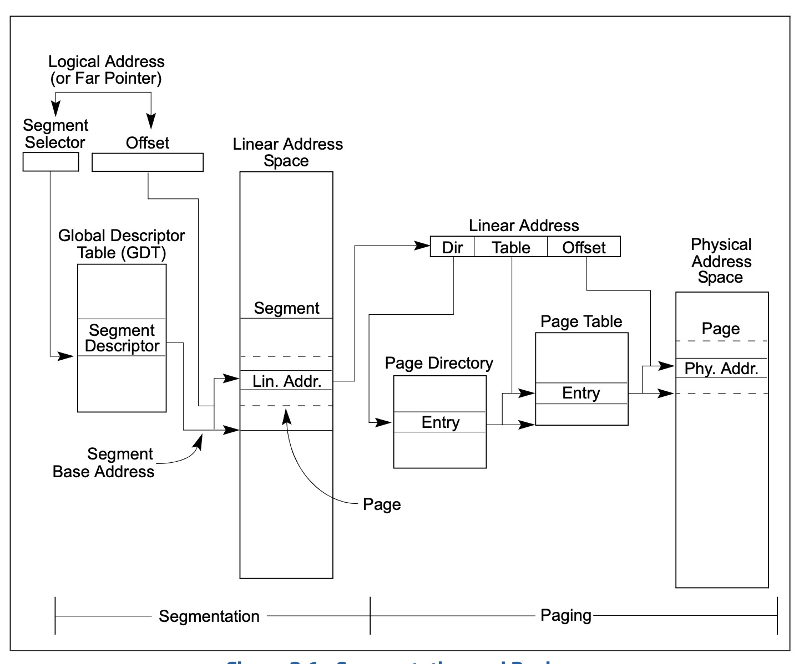
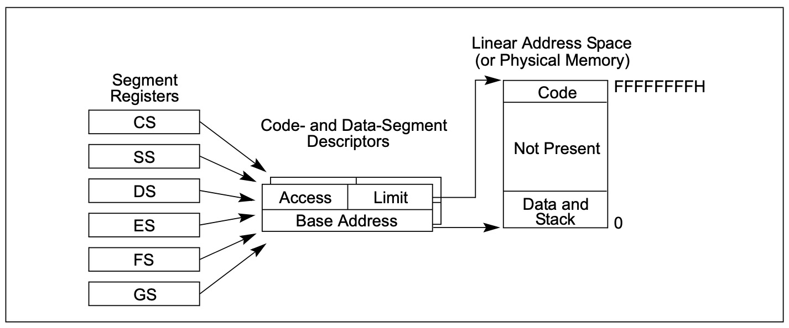
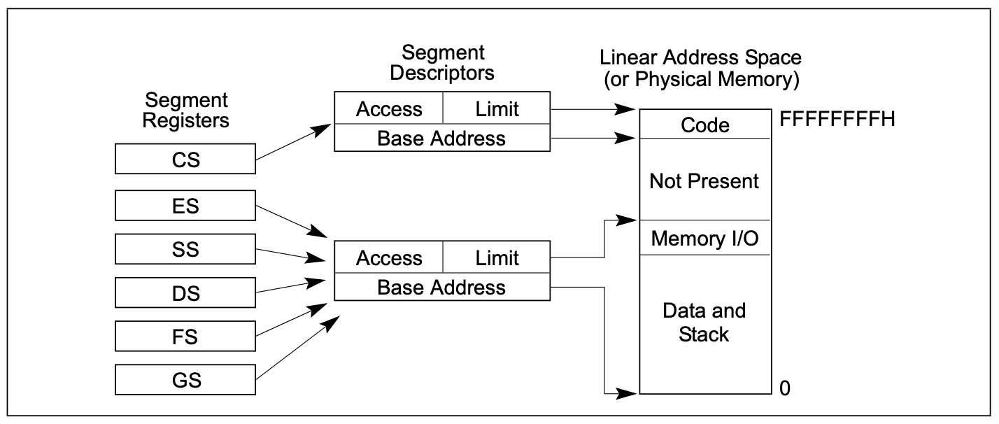
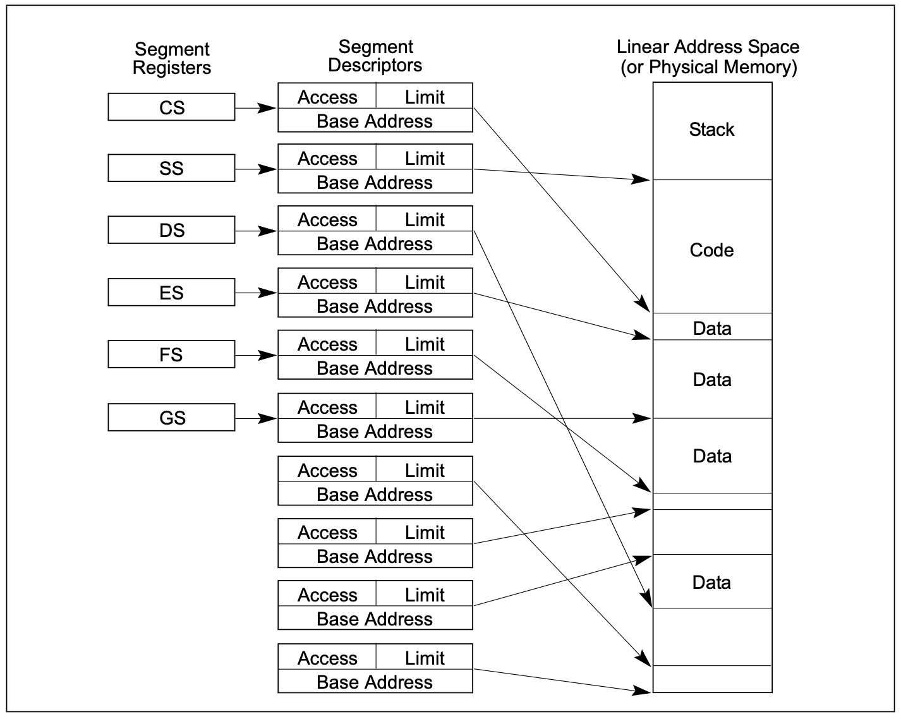
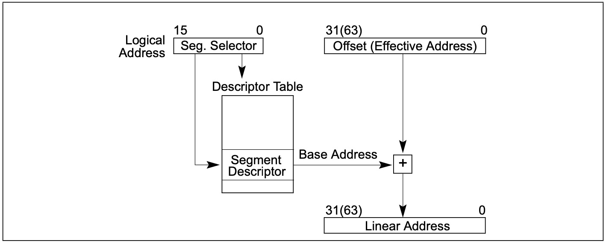
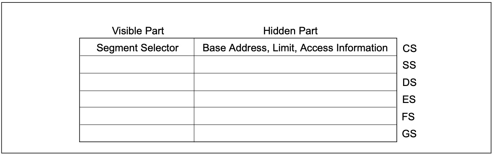
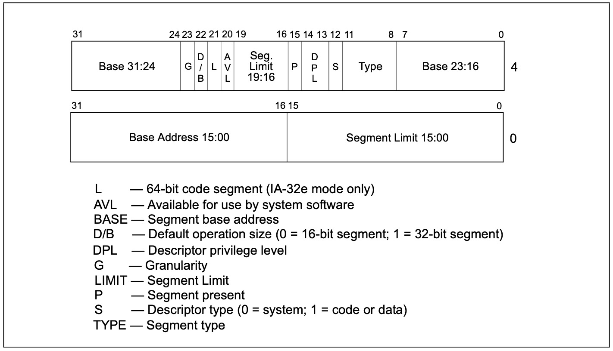
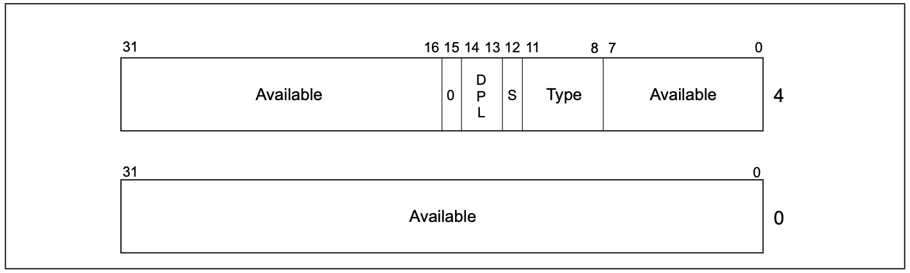
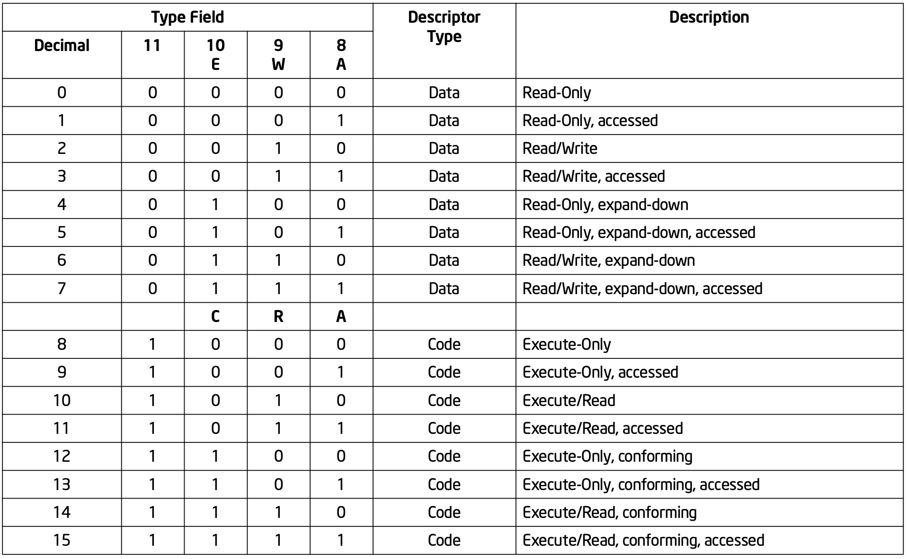
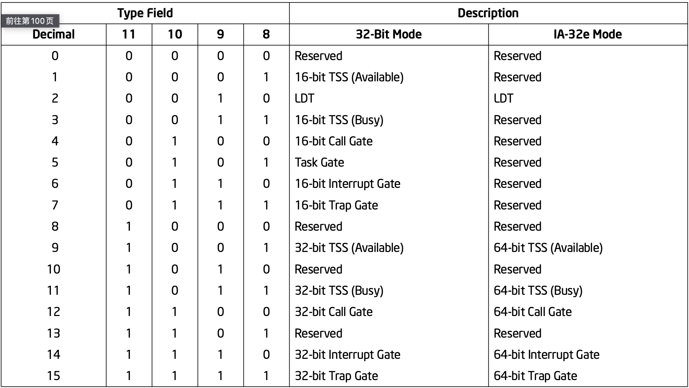

上一篇文章介绍了Intel IA-32架构的整体架构，从本节开始，将会逐一对前面涉及到的每一个部分进行详细介绍，本节要介绍的就是硬件架构下的内存管理。
概览(MEMORY MANAGEMENT OVERVIEW)
IA-32架构下的内存管理被分为两部分：分段和分页。分段机制为每个任务提供了提供了单独隔离的代码段、数据段和堆栈段，这样多个任务之间的执行就能够做到互不影响；分页机制实现了传统的按需分页、虚拟内存系统，该系统能够将程序执行过程中需要的部分加载到物理内存中，分页机制同样能实现多任务之间的隔离。在保护模式下，分段式必须使用的，但是分页是可选的(CR0.PG)。
上述两种机制(分页/分段)能够通过配置从而实现单任务系统、多任务一同以及使用共享内存的多处理器系统。如下图所示

分段机制能够将处理器可寻址的线性地址空间分割成被称为段的更小的受保护的地址空间。段可以用来保存程序代码、数据、程序需要的堆栈或者系统数据结构(如LDT、TSS)，如果一个处理器上有多个任务在运行，那么每个任务都能被分配到它专属的这样一组段。并且处理器限制这些段之间的边界，并确保一个程序不会因为写进另一个程序的段而干扰另一个程序的执行。分段机制也可以对段进行分类从而限制对特定类型的段进行操作(如限制写入代码段)。
系统中的所有段都位于处理器的线性地址空间中。如果想要寻址某个段中的一个字节，那么需要提供一个逻辑地址。一个逻辑地址由段选择子和偏移两部分组成。段选择子是段的唯一标识符，通过段选择子可以在(GDT/LDT)中找到段对应的段描述符，段描述符中记录了段的基线性地址、段限长、访问权限、特权级别、段类型等信息。通过段描述符中的基线性地址和逻辑地址中提供的偏移址，就能够确定一个字节在段中的位置。
如果没有开启分页，那么线性地址就是处理器的物理地址。物理地址范围就是处理器在总线上生成的地址范围。因为多任务系统通常会定义一个比实际物理地址空间大很多的线性地址空间，因此就需要使用虚拟内存技术，线性地址空间的虚拟化由处理器的分页机制处理。分页机制支持一个由较小的物理内存(RAM/ROM)和磁盘存储虚拟出的一个较大的虚拟的地址空间。当开启分页时，每一个段被分割成若干个页(通常每个页4KB)，这些页内存储在内存或者磁盘中。当应用程序尝试访问一个线性地址空间的地址时，处理器会使用分页机制将线性地址转换为物理地址，然后对其执行相应的请求操作(读写)。
如果要访问的页当前不在内存中，那么处理器会中断当前正在执行的程序(通过产生一个缺页异常来中断程序)。接着操作系统会将要访问的页从磁盘加载进内存然后继续执行应用程序。
一个正常的使用了分页机制的操作系统，页在磁盘和物理内存之间的交换对应用程序是透明的。甚至是16为的IA-32程序在虚拟8086模式下也能够被透明的分页
分段机制(USING SEGMENTS)
IA-32架构支持的分段机制可用于实现各种系统设计，这些设计可以是平坦模型，即仅仅利用分段来保护程序，也可以是充分利用分段机制构建一个健壮的系统，让多个任务可以可靠地执行。下面几节将举例说明如何在系统中采用分段来提高内存管理的性能和可靠性。
基础平坦模型(Basic Flat Model)
最简单的系统内存模型就是基础平坦模型，在基础平坦模型中，操作系统和程序可以访问一个连续的、没有分段的地址空间。无论是对系统设计者还是程序开发人员，基础平坦模型最大程度上隐藏了架构的分段机制。
在IA-32架构下实现一个基础平坦模型，至少需要创建两个段描述符：一个指向代码段，另外一个执行数据段。然而这两个段被映射到整个线性地址空间，也就是说，这两个段的基地址和限长相同，分别是0和4G。通过设置4GB的段限长，分段机制就不会因为超过段限长的线性地址而产生(GP)异常，即使指定底下下没有物理内存。
ROM一般位于地址空间的顶部，因为处理器从FFFFFFF0H开始执行(硬件设计)，RAM位于地址空间底部，因为刚通电或者复位初始化后，DS寄存器值被初始化为0。

保护平坦模型
保护平坦模型与基础平坦模型类似，区别在于保护平坦模型的段限长被设定为指定物理内存范围内，如果试图访问物理内存之外的不存在的内存，则会产生一个通用保护异常(GP)。

可以使保护平坦模型更加复杂从而支持更多的保护功能。例如：为了能在分页机制中分离普通用户和超级用户的代码和数据，需要定义4个段：特权级为3的代码段和数据段、特权级为0的代码段和数据段。通常这些段是相互覆盖的并且基地址都是线性地址空间的0地址。这种平坦分段模型能够在操作系统和应用程序之间起到保护作用，并且通过为每个任务提供一个分页结构(页表)，能够在应用程序之间提供保护作用。一些流行的多任务操作系统使用了类似的设计。
多段模型
一个多段模型充分利用了分段机制，提供了对代码、数据以及程序任务的硬件级强制保护。在该模式下，每个任务都有各自的段描述符和段，程序可以完全独享这些段，也可以与其他进程共享这些段。对所有段的访问以及对系统上运行的各执行程序的访问由硬件控制。
分段机制不仅可以拒绝访问一个超过段限长的地址，还可以阻止一些在段中不允许执行的操作。例如：代码段是只读的，因此硬件能够阻止任何尝试写代码段的操作。为段产生的权限信息也可以用来设置特权级别，特权级别能够用来保护操作系统被未授权的应用程序访问。

IA-32e模式下分段(Segmentation in IA-32e Mode)
在IA-32e模式下，分段的区别取决于是在兼容性模式下还是在64位模式下。在兼容模式下，分段模式和传统的32位、16位下一样。
在64位模式下，分段通常是(但不是完全)被禁用的，取而代之的是一个平坦的64位的线性地址空间。处理器默认CS、DS、ES、SS这些段的段基地址为0，这时逻辑地址就是线性地址，因为不再需要通过段基地址 + 偏移地址来将逻辑地址转换成线性地址了。FS和GS段寄存器除外，这两个基地址可以用作寄存器间接寻址使用。需要注意的是，64位模式下处理器不会进行段限长检查(因为64位模式下实际上不使用段)
分页与分段(Paging and Segmentation)
在上述的三种分段模型中，都可以使用分页。处理器把线性地址空间分割成许多的页，这些页再被映射到实际的物理地址空间。分页机制提供了一些页级别的保护措施，这些保护措施可以和段保护措施搭配或者取代段的保护措施。例如：它可以对每个页实行读写保护。另外，分页机制同样能够对每个页实现用户-管理员两级别保护。
物理地址空间(PHYSICAL ADDRESS SPACE)
在保护模式下，IA-32架构提供了最大4GB的物理地址空间(2的32次方)，这些地址是处理器能够在地址总线上的寻址范围。这些地址空间是平坦的(未分段的)、连续的从0x0H-0xFFFFFFFFH的所有地址。物理地址空间同样可以被映射到读写内存、只读内存、I/O内存。本节描述的内存映射功能能够将物理内存分割成段和(或)页。
从奔腾pro处理器开始，IA-32支持将物理地址空间扩展到64GB，此时最大物理地址为0xFFFFFFFFFH，该扩展通过一下两种方式实现：
- 开启CR4的第5个控制位，PAE位
- 开启PSE功能(奔腾三处理器引入)
物理地址后来已经支持扩展到36位以上
Intel64处理器和物理地址空间(Intel® 64 Processors and Physical Address Space)
目前64位模式下开放了48位的物理内存地址，最多可以支持256TB的物理内存(这句话不是指南上的，是查阅资料得来)
逻辑地址与线性地址(LOGICAL AND LINEAR ADDRESSES)
保护模式下，处理器会经过两步骤转换最终得到物理地址，逻辑地址转换机制与线性地址的分页机制。
即使最小程度的段机制的使用，处理器地址空间内的每个字节都是通过逻辑地址访问的。一个逻辑地址包含16位的段选择符和32位的段内偏移两个部分。段选择子用于从GDT/LDT中确定指定的段描述符，通过段描述符可以确定段基地址、段限长、段访问权限信息等，从而可以在线性地址空间中确定一个段，通过32位的的段内偏移值，可以确定该字节在段内的位置。
处理器会将每一个逻辑地址转换为线性地址，线性地址是处理器32位线性地址空间中的一个地址。就像物理地址一样，线性地址空间是平坦的、从0x0H到0xFFFFFFFFH的连续的地址空间。线性地址空间包含了系统定义的所有段和数据结构。逻辑地址到线性地址的转换如下所示：

如果没有开启分页，处理器会直接将线性地址当作物理地址送到地址总线，如果开启了分页，那么需要将线性地址进一步通过分页机制转换成物理地址。
IA-32e模式下的逻辑地址转换(Logical Address Translation in IA-32e Mode)
在IA-32e模式下，64位处理器使用上述步骤将逻辑地址转换为线性地址。在64位模式下，段的偏移量和基地址是64位而不是32位。线性地址格式也是64位宽。每个代码段描述符都提供一个L位。这个位允许一个代码段按代码段执行64位代码或传统的32位代码。
段选择子(Segment Selectors)
段选择子是一个16bit位的段标志符，它不直接指向段，而是指向GDT/LDT中的段描述符。通过段描述符确定段在线性地址空间中的位置。一个段选择子包含以下几个部分：
Index(3-15bit)
用于从GDT/LDT的8192个段描述符项中确定指定的段描述符，由于每个段描述符是8字节长度，因此Index * 8就得到了GDT/LDT中指定段描述符的位置。
TI(table indicator, bit2)
用于指定GDT/LDT表，如果TI置1，那么从LDT表中寻找，如果TI置0，那么从GDT中寻找
RPL(Requested Privilege Level bit0-1)
指定了段选择子的特权级。特权级从0到3，0特权级有对系统最高的特权，操作系统就是处于该优先级，特权级3一般是应用程序。
处理器不会使用GDT表的第一个段描述符，一个段选择子可以通过指向该描述符表明选择子是一个空段选择子。当像段寄存器(除了CS和SS)加载空选择子时处理器不会产生异常，但是如果尝试使用该空选择子，那么处理器会产生一个通用保护异常。需要注意的是，向CS和SS加载空选择子会导致一个通用保护异常的产生。
段选择符作为指针变量，可以被引用程序查看，但是由链接程序设置和修改，应用程序无法更改。
段寄存器(Segment Registers)
为了减少地址转换的开销和代码复杂性，处理器提供了6个段寄存器去存储段选择子。每个段寄存器都支持特定类型的内存寻址(代码段、数据段、堆栈段等)。实际上对于任何一个程序而言，执行之前必须要将代码段寄存器(CS)、数据段寄存器(DS)以及堆栈段寄存器(SS)赋予有效的段选择子。处理器同时提供了三个额外的段寄存器(ES、FS以及GS)为当前执行程序提供额外的段。
程序如果试图访问某个段，那么这个段的段选择子必须要被加载到这些段寄存器之一。因此，尽管一个系统可以定义很多的段，但是只有6个段能够被立刻使用(因为只有6个段寄存器)。其他的段只有在程序执行过程中将其段选择符加载进段寄存器时才能被程序使用。

每个段寄存器都有两个部分：可见部分和隐藏部分(隐藏部分由北称为描述符缓存或者阴影寄存器)。当一个段选择子被加载到段寄存器的可见部分时，处理器会将段选择子对应段描述符的段基地址、段限长、访问控制信息等加载到段寄存器的隐藏部分。这样能够允许处理器在进行地址转换时不必花费额外的总线周期去段描述符中查询，直接使用段寄存器的隐藏部分即可。
在多处理器可以访问同一个描述符表的系统中，软件必须负责在处理器修改描述符表时重新加载段寄存器；否则段寄存器的描述符缓存中仍然缓存着旧的描述符信息，这样可能会造成问题。
有两种方式可以加载段寄存器
- 直接加载指令，比如MOV、POP、LES、LSS、LGS以及LFS指令，这些指令明确的引用段寄存器
- 隐含加载指令，比如如CALL、JMP以及RET指令的远指针版本，SYSENTER和SYSEXIT指令，以及IRET、INT n、INTO、INT3和INT1指令。这些寄存器会默认修改CS段寄存器(有时可能会同时修改其他段寄存器)作为其指令操作的一部分
MOV指令同样能够将段寄存器的可见部分加载到通用寄存器中
IA-32e模式下的段加载指令(Segment Loading Instructions in IA-32e Mode)
因为ES、DS、SS寄存器在64位模式下不再使用，因此寄存器中段描述符部分被忽略。一些段加载指令仍然有效(例如：POP ES)。但是在进行地址转换时会把ES、DS、SS段的基地址当作0来看待(即逻辑地址等于线性地址)
处理器会检查线性地址是否是典型地址，但是不会检查段限长。模式切换不会更改段寄存器，这些段寄存器在64位模式执行时同样不会被改变，除非明确的使用指令加载新的值。
为了使应用程序保持兼容，段加载指令同样能够在64位模式下正常工作，GDT/LDT中的段描述符同样会被自动加载到段寄存器的隐藏部分，然而，在64位模式下这些内容将被忽略，因为64位模式采用平坦模型，将出了FS/GS之外的段的基地址默认为0。FS和GS用来支持寄存器间接寻址。
在64位模式下，使用FS段和GS段覆盖的内存访问不会被检查段限长，也不会被检查属性。正常的段加载(MOV to Sreg和POP Sreg)到FS和GS，在段寄存器的隐藏部分加载一个标准的32位基础值。标准32位以上的基址位被清除为0，以允许使用少于64位的实现方式的一致性。
当在兼容模式下，FS和GS覆盖的操作是由32位模式行为定义的，不管加载到隐藏描述符寄存器基字段的前32位线性地址的值是什么。兼容性模式在计算有效地址时，会忽略上面的32位。
段描述符(Segment Descriptors)
段描述符是GDT/LDT数组中的每一个数组项，定义了段的地址、段的大小、访问控制信息以及状态信息。段描述符通常是由编译器、连接器、加载器或者操作系统程序创建，应用程序不允许创建段描述符。如下图为段描述符的通用结构：

段限长(Segment limit field)
该字段表明了段的大小。处理器有两种方式使用该限长，这取决于段描述符中G标志
- G标志被清空时，段的大小在1B - 1MB之间(以Byte为单位)。
- G标志置位时，段的大小在4KB - 4GB之间(以4KB为单位)。
处理器有两种方式使用段限长，这取决于段是向上扩展还是向下扩展。
- 对于向上扩展的段，段内的偏移从0到段限长，超过段限长的偏移值将会导致处理器产生通用保护异常。
- 对于乡下扩展的段，段内偏移从段限长+1到0xFFFFH或者0xFFFFFFFFH(取决于B标志)，小于等于段限长的偏移值偏移值将会导致处理器产生通用保护异常。减小段限长能够增加段的长度，一般情况下栈段都是向下扩展的段，这样有利于栈的增长。
基地址(Base address fields)
该字段定义了段在4GB线性地址空间中的起始位置，段的起始位置最好是16字节对齐的，尽管没有硬性要求，但是16字节对齐的代码和数据能够使得处理器性能达到最佳(这是由于CPU的访问机制导致的，CPU为什么需要对齐访问，如果数据不在内存对齐的地方，那么CPU就有可能需要读取两次才能取出一个完成的数据)。
段描述符类型(Type field)
表明段或门的类型，并指定可进入段的种类和增长方向。这个字段的解释取决于描述符类型标志是指定一个应用(代码或数据)描述符还是系统描述符。类型字段的编码对于代码、数据和系统描述符是不同的。
S标志(descriptor type)
表明一个段是系统段还是应用程序段
- 当S置位时，表明该段是应用程序段(代码、数据)
- 当S置0时，表明该段是系统段
DPL(descriptor privilege level)
指明了段的特权级，特权级从0到3，数字越大，特权越小。DPL用于控制对段的访问权限(后续介绍)。
P标志(segment-present)
表明当前段是在内存中还是不在内存中。如果P置0，当指向段描述符的段选择子被加载进段寄存器时，处理器会产生一个NP异常(segment-not-present)。内存管理软件可以通过该标志来控制在某个特定时间有哪些段是被加载进内存的。该标志提供了一个除了分页之外的用于管理虚拟内存的方法。
当 P标志被置0时。操作系统或执行者可以自由地使用该段描述符中标记为 “可用”的位置来存储它自己的数据，例如关于失踪段位置的信息。如图：

D/B标志(default operation size/default stack pointer size and/or upper bound)
根据段描述符是可执行代码段、向下扩展的数据段还是堆栈段，该字段有不同的作用。(对于32位的代码和数据段，这个标志应该总是设置为1，对于16位的代码和数据段，应该设置为0)。
可执行代码段
对于可执行代码段，该标志被称为D标志，它表示段中指令所引用的有效地址和操作数的默认长度。如果置位，默认32位地址以及32位操作码或8位操作码；如果置0，默认16位地址以及16位操作码或8位操作码。另外，指令前缀66H可以指定操作符的长度而不使用默认长度，指令前缀67H可以指定地址值长度。
栈段
对于栈段，该标志被称为B标志。它指定了用于隐式堆栈操作(如PUSH、POP和CALL)的堆栈指针的大小。如果置位，默认32位栈指针；将该指针放在32位的ESP寄存器中；如果置0，默认16位栈指针，将该指针放在16位的SP寄存器中。如果该栈段是向下扩展的段，那么该字段同样表明了段地址的上界(见下一节)。
向下扩展的段
如果B置位，那么段的上界为0xFFFFFFFFH(4GB)；如果B置0，那么段的上界为0xFFFFH(1MB)。
G标志(granularity)
该字段用于确认段限长字段的单位，如果置0，那么段限长的单位就是Byte；如果置位，那么段限长的单位就是4KB。这个标志不影响段基地址的颗粒度，基地址的颗粒度总是字节单位。若设置了G标志，那么当使用段限长来检查偏移值时，并不会去检查偏移值的12位最低有效位。例如，当G=1时，段限长为0表明有效偏移值为0～4095。
需要注意的是，G标志和B/D标志两者其实并没有任何关系。例如：对于堆栈段，D置0，那么段的限长就是0xFFFFH(1MB)，此时如果G为1，那么说明粒度为4KB，这样检查段限长时，会忽略掉低12位，使用段限长的高4位。
L标志(64-bit code segment)
在IA-32e模式下，段描述符的第二个双字的第21位表明一个代码段是否包含本地64位代码。值为1表示该代码段中的指令是以64位模式执行的。值为0表示这个代码段中的指令是以兼容模式执行的。如果L位被设置，那么D位必须被清除(这是因为D标志是用来选择16位或32位，当L设置时表明是64位，此时D没有意义，即L=1/D=1组合没有意义)。
当不在IA-32e模式下或者对于非代码段，第21位是保留的，应该总是设置为0。
代码段/数据段描述符类型(Code- and Data-Segment Descriptor Types)
段描述符的第二个双字的[8-11]四个bit表明了段的类型。当段描述符中的S置位时，说明该描述符是代码或者数据段。此时第11个bit位决定了当前段是代码段还是数据段：0 - 数据段，1 - 代码段。如图所示
- 对于数据段，[8-10]分别表示访问标志(A)、写标志(W)、扩展方向(E)。注意，堆栈段也属于数据段，不过堆栈段必须是可读写的。尝试向SS段寄存器中加载一个不可写段的段选择子会导致处理器产生GP异常。如果堆栈大小会动态变化，那么可以将E置位，此时堆栈向下扩展，便于增长。访问位表示自上次操作系统或执行人员清除该位后，该段是否被访问过。假设包含段描述符的内存类型支持处理器写入，每当处理器将段的选择器加载到段寄存器时，就会设置这个位。该位一直被设置，直到明确地被清除。这个位既可以用于虚拟内存管理，也可以用于调试。
- 对于代码段，[8-10]分别表示访问标志(A)、可读标志(R)、一致性标志(C)。代码段可以为只执行、可读可执行。当有常量或者其他静态数据和代码一起在ROM时，必须要设置R位。要从代码段读取数据，可以通过代码CS前缀的指令或者将代码段选择符置入段寄存器(DS、ES、FS或GS)。在保护模式下，代码段不可写。代码段可以是一执性代码段，也可以是非一致性的。进程跳转到特权级更高的一致性代码段时，程序的当前特权级保持不变。进程跳转到不同特权级别的非一致性代码段会导致通用保护异常(#GP)，除非使用了调用门或任务门(后续介绍)。不访问受保护程序或者某些异常处理程序(例如，除法错误或溢出)的系统程序可以被加载进一致性代码段。而那些需要被保护程序应该被加载到非一致性代码段中。(至于为什么设置了一致性代码段，我想可能是为了使得应用程序在访问内核某些不需要保护的功能时不用进行特权级切换，毕竟用户态到内核态的切换开销也不低)。需要注意的是：程序不能通过call或jump转移到权限较低的代码段，无论目标段是一致性代码段还是非一致性代码段。试图进行这样的执行转移将导致一般保护异常。(因为搞特权级不信任低特权级代码)。
- 所有的数据段都是非一致性的，这也就意味着低特权级的程序不能访问高特权级的数据。和数据段相反，数据段可以被更高特权级的程序访问而不需要使用特别的访问门。
- 需要注意的是：如果GDT/LDT段描述符位于ROM中，当程序或处理器试图更改在ROM中的段描述符时，处理器会进入一个不确定的循环(硬件设计如此，不必使用软件思维纠结原因)。为了阻止这种情况，需要将位于ROM上的段描述符的A位置1，并且保证操作系统不会对这些段描述符进行修改。

系统段类型(SYSTEM DESCRIPTOR TYPES)
当段描述符的S标志置0时，表明段描述符是一个系统段的段描述符，处理器能够识别以下几种类型的系统段描述符
- LDT段描述符
- TSS段描述符
- 调用门描述符
- 中断门描述符
- 陷阱门描述符
- 任务门描述符
这些段描述符分为两大类：系统段描述符和门描述符，系统段描述符指向系统段；门描述符自身就是门，它们或者指向目标代码段的入口指针，或者持有TSS段的段描述符。系统段描述符和门描述符种类如下图所示：

段描述符表(Segment Descriptor Tables)
段描述符表就是一个段描述符的数组，一个表中最多可以容纳8192(2的13次方)个段描述符(因为每个段描述符占8个字节，段选择子16位，因此最多可以有2的16-3次方，也就是8192个段描述符)。系统中一共有两种类型的段描述符表
- GDT(global descriptor table)：全局表述符表
- LDT(local descriptor table)：本地描述符表
每个系统必须定义一个全局表述符表(GDT)，该描述符表被系统的所有进程和任务使用；也可以定义一个或多个LDT供任务使用。例如：可以为每一个任务定义一个独享的LDT，也可以为所有的任务定义一个共享的LDT。
GDT本身并不是一个段，它是线性地址空间的一个数据结构。GDT的线性基地址和限长必须被加载到GDTR寄存器中。并且GDT的地址应当8字节对齐从而获得更佳的处理器性能(因为GDT数据的每个段描述符占8字节)。GDT的限长单位是Byte。因为段描述符总是8字节长，因此GDT的限长应该总是8*N - 1。
处理器并不会GDT的第一个段描述符项，一个指向该空段描述符的段选择子被加载进数据段寄存器(DS/ES/FS/GS)时处理器并不会产生异常，但是当程序试图通过该空段描述符访问数据时，处理器会产生一个GP异常。使用该空段描述符初始化段寄存器，这样可以防止程序不经意间使用未加载有效段描述符的寄存器。
LDT段在GDT中有一个类型为LDT系统段描述符的段描述符。GDT必须包含指向LDT段的段描述符，如果系统有多个LDT段，那么每个LDT段在GDT中都有各自的LDT段描述符。LDT段的访问是通过段选择子进行的，同样的，为了节省地址转换的时间，当加载段寄存器时，LDT段的段描述符也会被加载到LDTR的隐藏部分。
当使用SGDT将GDTR寄存器中的内容加载到内存中时，应该将GDTR中的内容加载到一个奇数字地址(16 * (2n + 1))，因为GDTR中的内容长48字节，如果起始地址是奇字地址，那么GDTR中的内容最终就是双字对齐的。用户程序通常不存储GDTR的内容，但通过这样的对齐方式，可以避免产生对齐检查故障的可能性。同样的SIDT加载IDTR内容到内存时也应该这么做。但是对于LDTR和和TR的隐藏部分时，则需要偶数字地址(因为LDTR和TR的段描述符长度为64字节)
如图则是32位和64位下GDTR和IDTR中的内容
IA-32e模式下的段描述符表(Segment Descriptor Tables in IA-32e Mode)
在IA-32e模式下，一个段描述符表可以包含多达8192个8字节的描述符。段描述符表中的一个条目可以是8字节。系统描述符被扩展到16字节(占据两个条目的空间)。GDTR和LDTR寄存器被扩展为容纳64位基址。相应的伪描述符为80位，如上图。下面一些系统段描述符被扩展到16字节
- 调用门描述符
- IDT门描述符
- LDT和TSS段描述符
总结
对于分段机制的介绍到这里就告一段落了。回顾本文，对分段机制不同程度的使用，使得系统可以采用不同的内存模型，主要分为基础平坦模型、保护平坦模型、多段模型。历史参考早期的分段模型主要是为了管理更大的物理内存，通过段寄存器指向段描述符，通过段描述符管理访问更大的内存地址空间，但是随着64位系统的推出，最多可以访问2的64次方的地址空间(目前只开放了48个地址总线，即最多可以管理156TB的内存，但是这也足够了)，已经逐渐不再使用分段，转而使用平坦内存模型。实际上linux无论是在32位还是64位的Intel架构上，都会通过将段基地址设为0来实现平坦内存模型(intel由于历史包袱不得不保留分段模型，但是实际上有的cpu并没有对分段提供很好的支持，linux通过这种方式提升了平台移植性)。